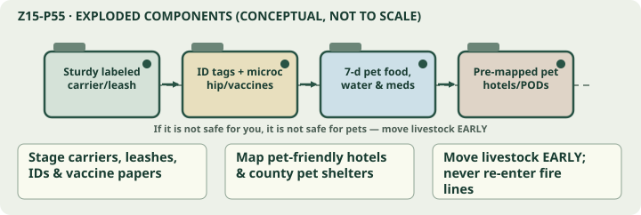

Z15-P55 · Disaster scenarios · New manuscript
Evacuate companion animals and prepare rural livestock contingencies safely
Prevent both animal tragedies and dangerous delayed human evacuations caused by unplanned pet or livestock scrambles.
When it applies · Households with dogs, cats, small cage pets, or small-acreage horses/chickens/livestock.
Equipment · Sturdy carriers/leashes, current ID tags + microchip records, 7-day pet food/water, vaccination proof, and pre-arranged rural boarding/trailer contacts.

Actions
- Follow the universal preparedness rule: "If it is not safe for you, it is not safe for your pets"—keep sturdy labeled carriers, leashes, collars with ID tags, microchip numbers, vaccination copies (required by most pet shelters/boarding kennels), and a 7-day supply of pet food, water, and medications packed beside human go-bags.[D17]
- Practice loading nervous cats and dogs into carriers calmly during normal weeks and map pet-friendly motels, relatives, and county co-located animal shelters along BOTH evacuation routes ahead of disaster season.[D17, D14]
- For small-acreage horses or livestock, plan high-ground pasture access, sturdy fencing identification, and early trailer hauling agreements with neighbors/fairgrounds well ahead of fire or flood—never risk human lives trying to haul panicked livestock into active flames or floodwater.[D17, D08]
Failure recognition · Leaving panicked pets untagged inside a house during a wildfire evacuation, then sneaking back across police lines and getting trapped by flames.[D17, D08]
Verify · Confirm carriers/leashes/ID tags/vaccination papers/7-day pet food staged by exits and pet-friendly hotels/shelters mapped beforehand.[D17]
Stop or change course · Never re-enter a closed disaster perimeter for animals—coordinate strictly with official animal-control and fire/rescue teams once cleared.[D17, D08]
Evidence and editorial notes
- D08 · FEMA / Ready.gov · Wildfires (current web edition)
- Section: Stay safe during wildfire; evacuate when directed · Conditions: Wildfire threat with local warning and evacuation system
Support: Plan to leave early and follow official open routes and local evacuation orders. Return only when allowed.
Limitations: Ready–Set–Go is one local vocabulary. Vehicle staging is editorial and does not justify delay after a warning. · Conflicting evidence: See A02 claim audit for boundaries.
Editorial note: Grounds wildfire evacuation readiness and route-abort decisions. · Specialist reviewer: Wildland fire management and emergency services
Primary source · checked 2026-11-24 - D14 · FEMA / Ready.gov · Evacuation (current web edition)
- Section: Before, during and after evacuation · Conditions: Official evacuation or a preplanned, safely accessible departure
Support: Prepare a go-kit, routes, transport and a contact plan. Follow official routes and use the locally indicated registration or reunification channel.
Limitations: Shelter accessibility and animal accommodations require local and ADA guidance; no fixed national website is assumed. · Conflicting evidence: See A02 claim audit for boundaries.
Editorial note: Core evacuation execution and accountability evidence in Z15. · Specialist reviewer: Emergency management and transportation safety
Primary source · checked 2026-11-24 - D17 · FEMA / Ready.gov · Prepare Your Pets for Disasters (current web edition)
- Section: Pet, Service-Animal, and Vulnerable-Member Accountability · Conditions: Households with pets, service animals, children, older adults, or access/functional needs
Support: Include leashes, carriers, vaccination records, pet food/water, and pet-friendly shelter lists in household evacuation plans—never leave pets chained or trapped behind; coordinate explicit buddy assignments for children, older adults, and mobility/power-dependent household members.
Limitations: General public Red Cross shelters always admit service animals under ADA rules, whereas companion pets often require separate co-located or pet-friendly shelters. · Conflicting evidence: None; complements T10 disability planning.
Editorial note: Ensures complete household and vulnerable-group accountability in Z15. · Specialist reviewer: Accessible emergency management and animal welfare
Primary source · checked 2026-11-24
Source lineage · FEMA Ready.gov Pets; new manuscript · Classification · New manuscript.